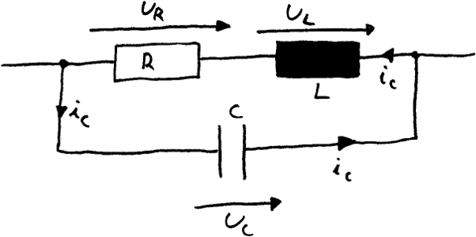

Does damping change the frequency of an oscillator?
Preface
Most computers programs try to find numbers or curves that solve problems. A Computer Algebra System like Maxima is specialised in finding the formula that provides the solution instead:
| x=1/10*y+5*y^2-3; |
| solve(%,y); |
Most of the times a formula can speak for itself. It can for example describe
the mechanism that causes a phenomenon or it can tell in which way a problem
can be optimized.
But it can obviously be used to generate numbers instead. Maxima might be better
suited for doing this than many programs that claim to have been written for
numerical work:
- It supports simple floating-point numbers like 1.25e-7 or 0.3.
- But if they aren't precise enough it offers bigfloats (example: 1.25b-7)with a user-selectable number of digits.
- If a numbers is specified as a fraction of integers it will be treated asan exact integer and will only be rounded on explicit request.
- And if converting from float to exact fractions involves a rounding errormaxima will warn the user:
| x=.1*y; |
| solve(%,y); |

Note that computers use binary numbers and therefore cannot express an exact 0.1 as a floating-point number. The error the computer will introduce to approximate 1/10 as floating number is extremely small:
| rationalize(.1); |
But sometimes simple tasks like finding the root of a polygon are extremely suspectible to small errors. Other times one step in solving an equation incorporates something like:
| (Something[Big]+Something[Very_small])/Something[Big]-1; |
Never trust a program that automatically decides the following:
| (Something[Big]+Something[Very_small])/Something[Big]-1=0; |
There are many such programs around.
Description of a complicated circuit
There are many good tutorials on Maxima. This document was just created instead to show it in action. We therefore grab a ridiculously complicated problem and see what the program can do:
The schematic of the circuit

|
g1:U_R(t)=-R*I_C(t); g2:U_L(t)=-L*diff(I_C(t),t); g3:I_C(t)=C*diff(U_C(t),t); g4:U_L(t)+U_R(t)=U_C(t); |
()('diff((),t,1))
()()()" >
Maxima can solve equation systems automatically:
|
[ x+y=5, y+z=3 ]; solve(%,[x,y,z]); |
It even introduces additional variables like %r1 to show there is more than
one solution.
But it can of course shorten equation systems by introducing one equation into
another like we will do with the equations we have previously named g4 and g1:
|
g4; solve(g4,U_R(t)); g5:ev(g1,%); |
()()()" >
One could do this on step on paper, too. But when doing a long list of calculations the paper-approach is too prone to errors for this to be practical. So let us evaluate g2 and g3 with the knowledge we have from the last step:
|
solve(g5,U_L(t)); g6:ev(g2,%); g7:ev(g3,%); |
()('diff((),t,1))" >
Combining the last two results we get a one-line description of the problem:
| dgl:ev(g6,g7); |
Perhaps things look nicer if we combine the right- and the left hand side of this equation:
| lhs(dgl)-rhs(dgl)=0; |
Solving the differential equation
The naïve approach
Maxima will try to find a formula that solves differential equations if they are
in the "one time-dependent variable per equation" form - which the
differential equation is in by now.
Since a differential equation describes all potential shapes a curve can assume
but doesn't describe the actual height nor which of these possibilities are actually
used in reality the result looks quite monstrous in this case:
| solution1:desolve(dgl,U_C(t)); |
If we answer the question differently the form the answer is presented in does change:
| solution2:desolve(dgl,U_C(t)); |
This time the question maxima has asked doesn't actually change the shape of the curve that solves the differential equation, though. It just determines if the program combines the exp() functions that solve the problem to sinusses.
A starting value
Maxima maintains a database of known facts. We can use this database to tell the program about the starting values of the curve it is about to generate. The first of these values is easy to acquire: We want to start with a discharged capacitor:
| atvalue(U_C(t),t=0,U_0)$ |
The second condition could be calculated using our initial equation system and knowledge about the current through the inductor. Or we can tell maxim we want to know a condition that makes the sinus go away:
|
(2*C*L*(U_C(0)*C*R+(at('diff(U_C(t),t,1),t=0))*C*L)-U_C(0)*C^2*L*R)=0; InitialCondition1:solve(%,'diff(U_C(t),t)); |
Let's assign 'diff(U_C(t),t) the right-hand-side of the first element in this equation list for the case that t=0.
| atvalue('diff(U_C(t),t),t=0,rhs(InitialCondition1[1]))$ |
We also can inform maxima about enough facts about the problem it does need to ask the same question again:
| assume(C>0,R>0,L>0,C*R^2<4*L); |
Now that the solution does no more need to be this general it does look much cleaner:
| solution2:desolve(dgl,U_C(t)); |
The actual result
From the last equation one can easily see that the resonance frequency is in fact dependent on the damping:
| Frequency:f=(sqrt(4*L-C*R^2))/(2*sqrt(C)*L)/(2*%pi); |
Visualization of the result
Real circuit element values
We wnt to variate R, but the actual values of L and C don't really matter so we can set them for example to 1:
|
ElementValues: [ L=1, C=1, U_0=1 ]; |
It is always good to keep real numbers separate from the actual formula so one can switch between displaying tha formula and the result:
| Frequency; |
| at(Frequency,ElementValues); |
To make the command for plotting shorter we should assign the right-hand-value of the solution of the differential equation with the applied element values in a macro, though:
| Voltage(R,t):=ev(rhs(solution2),ElementValues); |
Maxima will keep all variables it doesn't currently know the value of as symbols. So looking if defining the functions work is easy:
| Voltage(R,t); |
| Resistors:makelist(i/20,i,0,20); |
| float(Resistors); |
The following animation now demonstrates how little damping actually affects the frequency:
| load("draw"); |
|
wxplot_size:[1024,768]$ wxanimate_framerate:2$ with_slider_draw( /* The parameter we want to assign to the slider and all values it can assume */ R,Resistors, /* The thing we actually want to draw */ key=concat("R=",float(R)," Ohm"), explicit( ev(Voltage(R,t)), t,0,20 ),line_type=dots,color=black, key=concat("R=0.0 Ohm"), explicit( ev(Voltage(0,t)), t,0,20 ), yrange=[-1,1], grid=true )$ |
Normally animated 2D plots are easier to read than 3D ones. But just to show that we can produce an especially shiny one, we do this, too:
|
wxdraw3d( grid=true,enhanced3d=true, wired_surface=true, nticks=200,contour=base, explicit( ev(Voltage(R,t)), t,0,10, R,0,1 ),colorbox="Magnitude" )$ |
This example has been created by the HTML export-feature of a post-15.04 wxMaxima.
Created with wxMaxima. The source of this maxima session can be downloaded here.